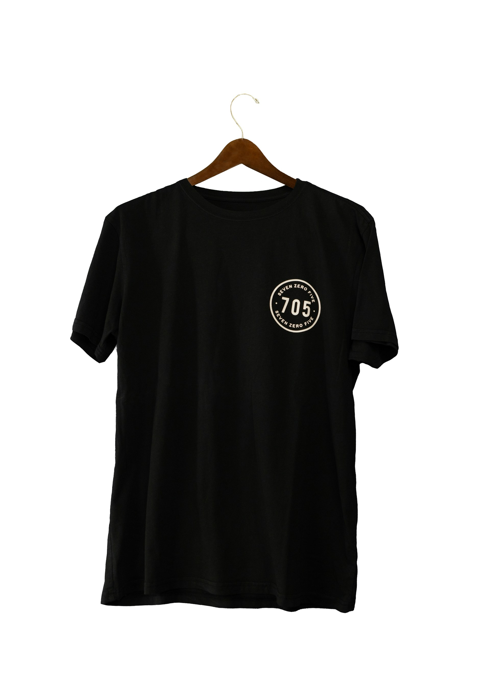
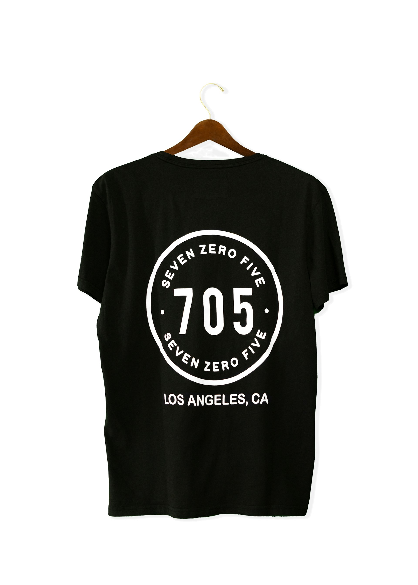
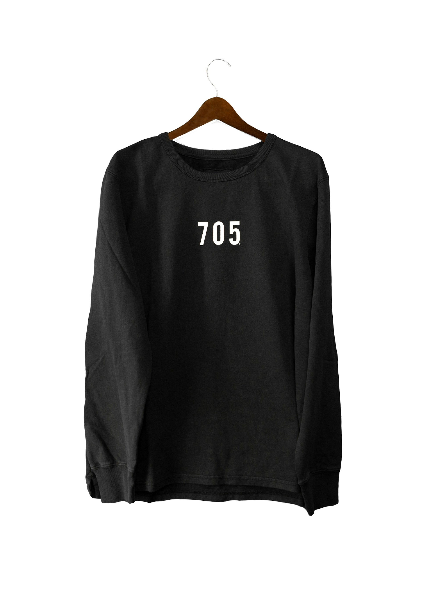

T-shirt Regular Fit
89,99 kr 72,00 kr
En klassisk T-shirt i mjuk bomullstrikå. Modellen har en rak passform med rund halsringning. Ett perfekt basplagg för din garderob som kombinerar stil med hållbarhet.
Passform: Regular fit
Komposition: Bomull 100%
Arbetsvillkor: Fabriken i Dhaka (Shanta Garments) har kollektivavtal.
Säkerhet: Byggnaden är inspekterad och godkänd enligt Accord on Fire and Building Safety.
Risk: Landet har generellt låga löner och begränsad facklig frihet.